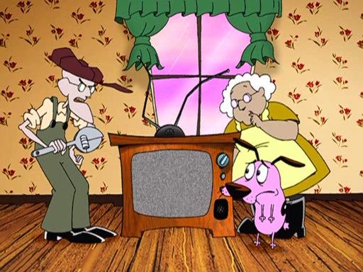

Who is Courage?
Courage is a kind yet easily frightened pink dog. He was abandoned as a puppy after his parents were forcibly sent into outer space by a crazed veterinarian. Soon after, he was found in an alleyway by Muriel Bagge, a friendly, sweet-natured Scottish woman. He lives with elderly Muriel and her also elderly husband Eustace Bagge , a grumpy, selfish and greedy farmer who regularly mistreats Courage out of jealousy and refers to him as "stupid dog". The entire family lives in a small, isolated farmhouse in what consists of a large, desert-like area in the middle of Kansas: the nearest town to the farmhouse is a fictional town with the literal name of Nowhere.
What Courage does?
- Courage encounters monsters, aliens, demons, mad scientists, zombies, vampires
- Courage protects his family by reconciling with the crature
- Despite his name, he is the 'real hero' and the bravest dog
Some of the monsters Courage meets
There are a handful of characters , including a fortune-telling chihuahua named Shirley the Medium; Eustace's mother "Ma"; and villains Katz and Le Quack. Click on the links below to read more about them: